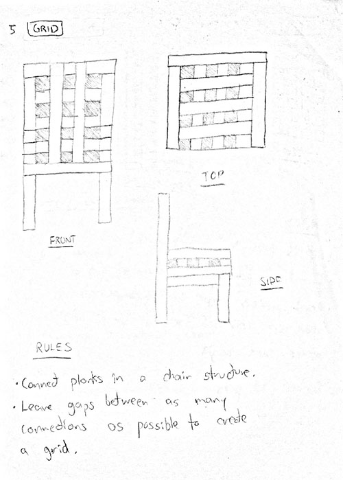
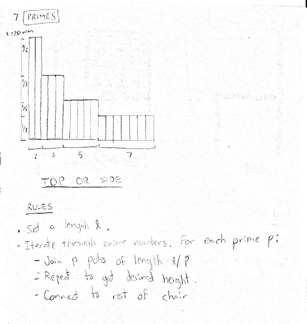
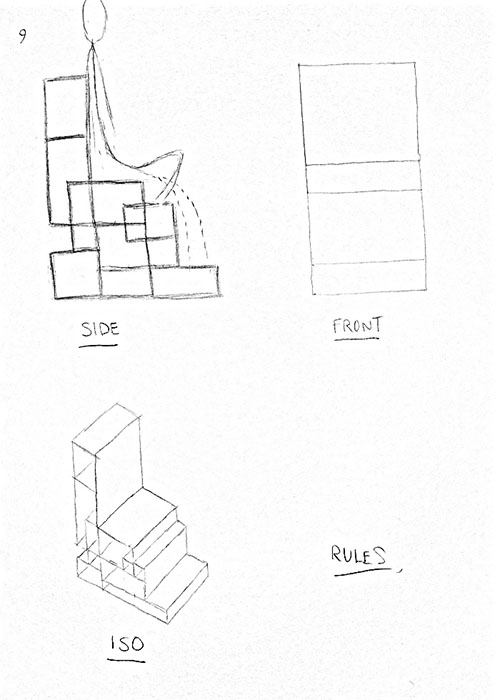
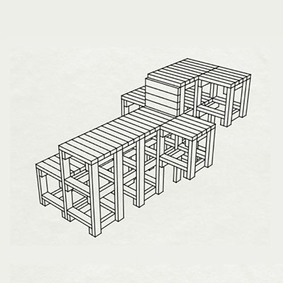
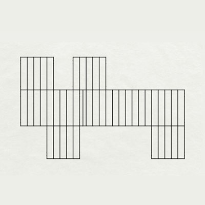
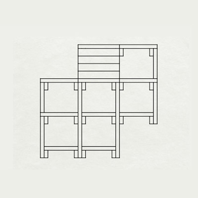

Conservation
A Chair Built from Cubes
Woodworking
Rule-Based Design

Conservation is a chair inspired by Sol Lewitt's drawing instructions. It follows a simple algorithm that can generate many different complex chairs.
Design Process
I built Conservation for my first project in 4.031: Design Studio - Objects & Interaction, where we were tasked with creating a seat based on a set of simple design instructions.
Rules
The rules for building a Conservation chair are simple:
- Get a rectangular prism.
- Split into four.
- Take one of the fourths and attach somewhere else.
- Repeat the process with the smaller rectangular prisms.
- Once finished, build structure and fill in sides as wanted.
Here is a 2D visual representation of one iteration of the process:

Brainstorming
I sketched nine chair ideas as well as their generative rules, ultimately deciding on Conservation.



3D Modeling
Rhinoceros 3D



Prototyping

Before building my Conservation chair, I built a prototype to test my generative rules out of balsa wood.
Finished Product


Learn more about the class I built this for here: